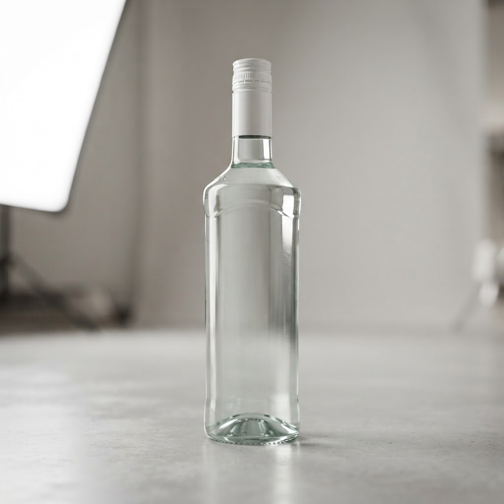

Ф магазин с доставкой в Кронштадте
Кронштадт — место обособленное, здесь свои законы логистики и темп жизни. Когда ночью вдруг понадобилось что-то из ассортимента, ф магазин с доставкой в Кронштадте часто оказывается единственным разумным вариантом для тех, кто не желает выходить на мороз или ждать утра.
Почему ночная доставка за час — это необходимость
Запросы клиентов из островной части города предсказуемы: им нужно быстро и без лишних церемоний. Когда за окном глубокая ночь, а в запасе пусто, ценность времени возрастает многократно. Мы проанализировали десятки заказов и пришли к выводу: ожидание дольше часа превращает услугу из спасения в раздражающий фактор. Наша стратегия работы строится на локальной мобильности. Мастер не тратит время на поиски парковки в спальных кварталах или долгие согласования маршрута через дамбу, если базируется внутри района. Мы сократили операционный цикл до минимума: принятие заявки, комплектация и выезд. В условиях островной специфики это единственный путь удержать сервис на плаву. Никаких пустых обещаний про «тридцать минут», когда на деле выходит два часа. Мы работаем честно: закладываем реальный час, учитывая особенности местного трафика и освещенности улиц. Клиент платит за результат, а не за легенду о сверхскорости.
Ф магазин с доставкой в Кронштадте как рабочая схема
Работа формата ф магазин с доставкой в Кронштадте требует не только наличия товара, но и понимания психологии покупателя, который совершает заказ в три часа ночи. В это время люди не ищут широкий выбор эксклюзивных позиций, им нужен базовый набор, чтобы закрыть внезапную потребность. Мы отсекли лишнее, оставив то, что пользуется реальным спросом. Это позволяет курьеру не тратить время на долгий сбор заказа. Каждый этап отлажен: от звонка до передачи пакета проходит ровно столько времени, сколько нужно для безопасного проезда по пустым ночным дорогам Кронштадта. Мы не расширяем географию присутствия, оставаясь в границах района, что позволяет держать заявленный темп. Стабильность услуги важнее амбициозных планов по захвату соседних территорий, где логистические издержки съедят всю прибыль и приведут к задержкам.
Что будет, если курьер не успеет доставить заказ за час?
Мы объективно оцениваем дорожную ситуацию перед выездом. Если погодные условия или иные факторы мешают уложиться в срок, мы обязательно предупреждаем заранее. Честность — лучший способ сохранить доверие, даже если обстоятельства оказались сильнее графика.
Итог
Итог всегда один: назвать следующий шаг покупателю — оформить заказ и получить его в течение часа в своём районе.
Заказать доставку
Оформите заказ сейчас: привезём за 40-60 минут в любой район Петербурга, круглосуточно.
Призыв
Сколько стоит ром bacardi купить в КронштадтеКронштадт — это островной анклав, где ночная жизнь часто упирается в логистические барьеры. Заказать напитки к порогу за час здесь сложнее, чем в центре, но … Сколько стоит bacardi ром купить спб в КронштадтеКронштадт изолирован от остального города, и поиск качественного алкоголя после полуночи здесь превращается в квест. Когда хочется просто отдохнуть, ожидание…
Сколько стоит bacardi ром купить спб в КронштадтеКронштадт изолирован от остального города, и поиск качественного алкоголя после полуночи здесь превращается в квест. Когда хочется просто отдохнуть, ожидание…